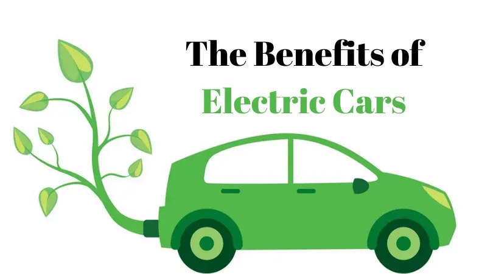
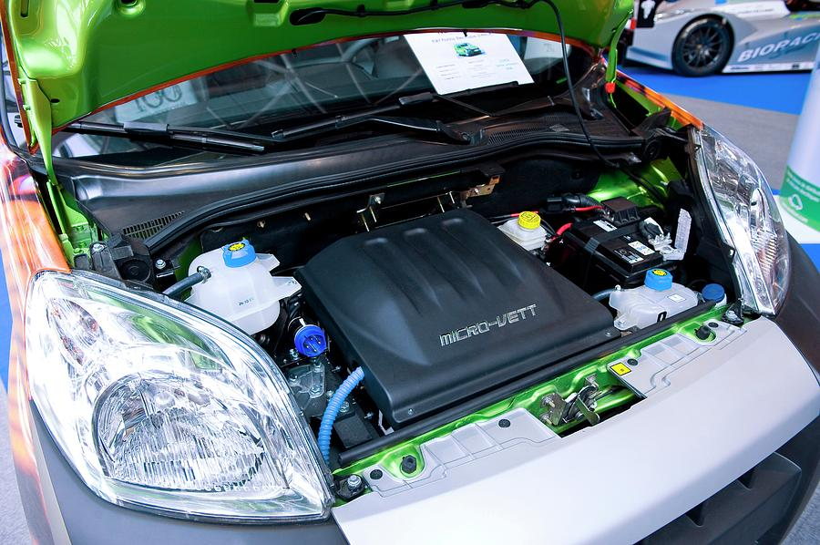
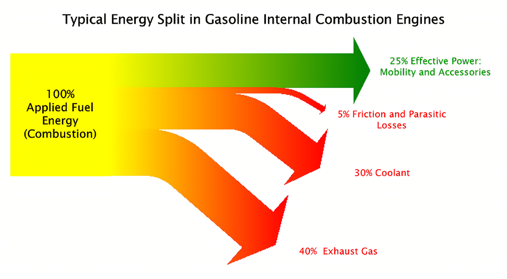

1: Electric cars don't emit ozone destroying gases

Non-electric cars end up using gasoline to make the car run. The gasoline then releases gas which pollutes the air all around us. Since electric cars don't use gasoline, they do not pollute the air that we breathe.
2: Less maintenance is needed on electric engines

Since electric cars don't require oil, it has less moving parts to check on to make sure that the car is running smoothly.
3: They're more energy efficient than combustion cars

Since electric cars are powered by electricity, it does not need to generate its own energy to run the cars like non-electric cars do.